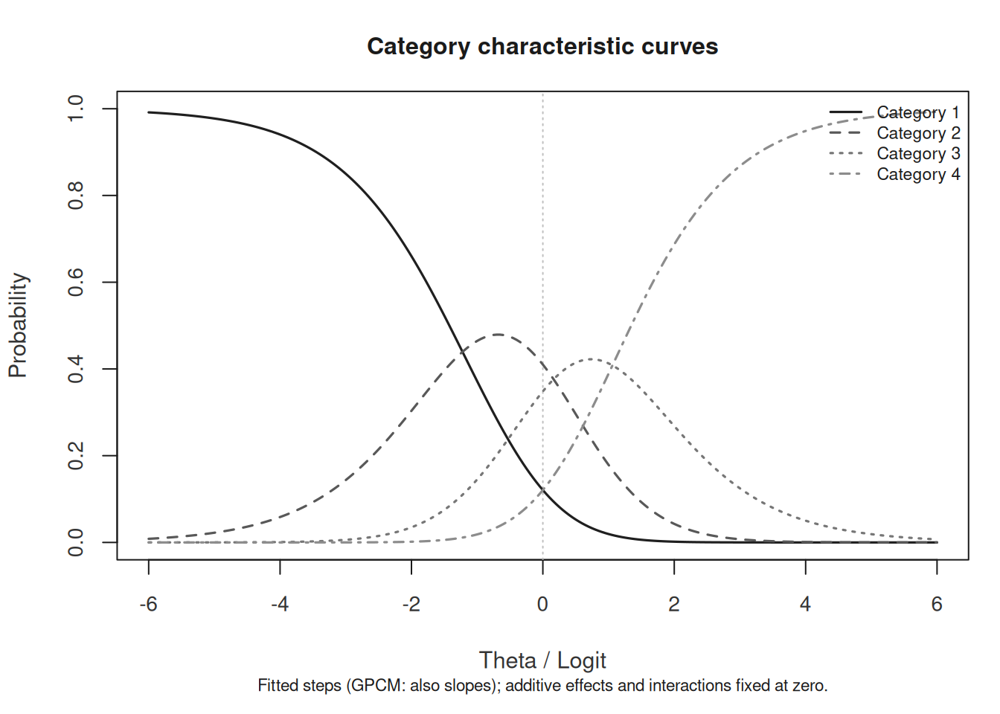
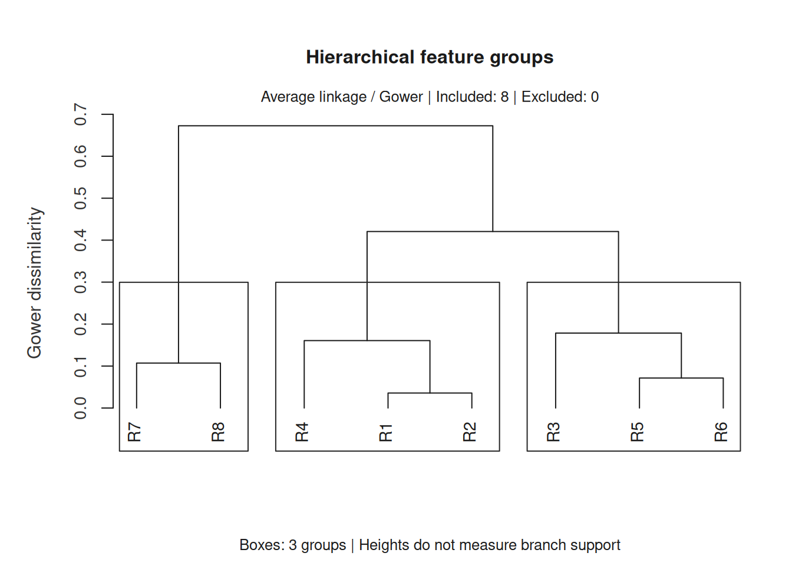
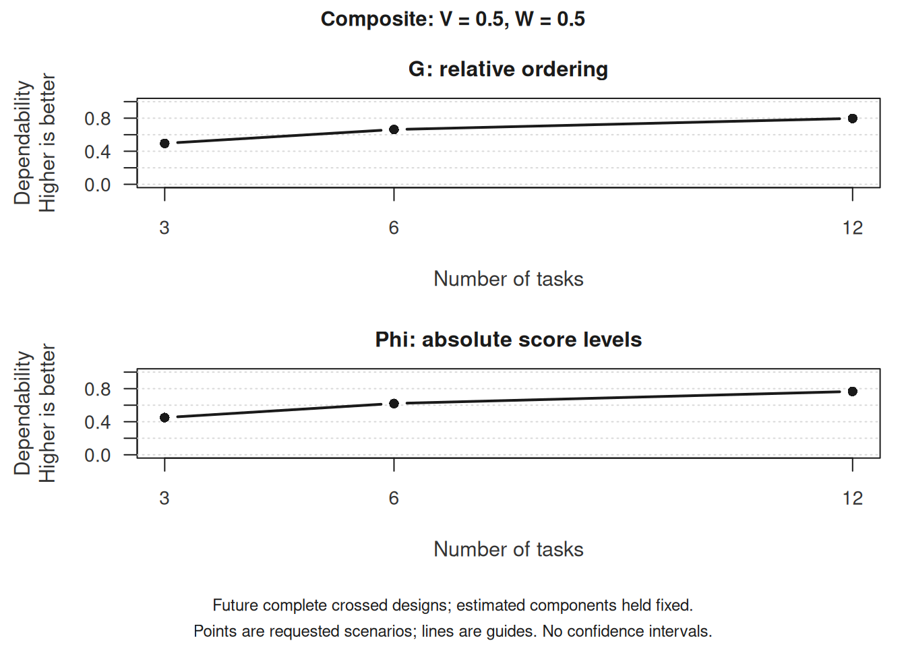
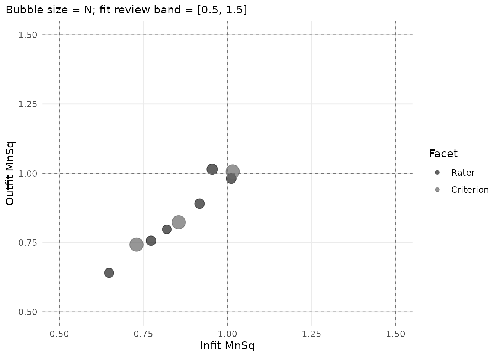
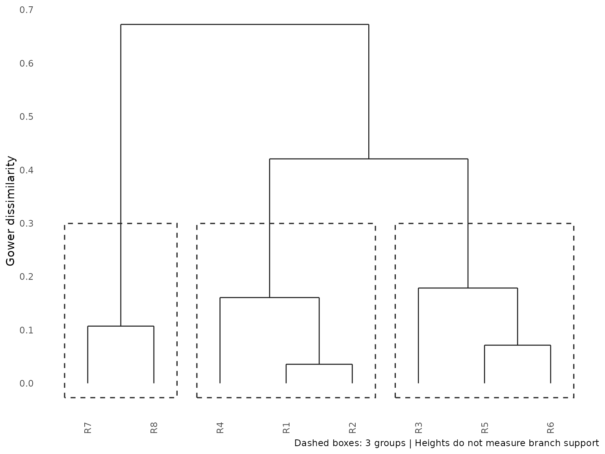

mfrmr Visual Diagnostics
Source:vignettes/mfrmr-visual-diagnostics.Rmd
mfrmr-visual-diagnostics.RmdThis vignette connects figures to questions about fitted ratings, external attributes and observed-score planning. It is organized around six practical questions:
- How well do persons, facet levels, and categories target each other?
- Which observations or levels look locally unstable?
- Is the design linked well enough across subsets or forms?
- Where do residual structure and interaction screens point next?
- How can external attributes describe groups of raters?
- How could changing the number of tasks affect an observed-score composite?
Model examples use packaged data; the feature hierarchy uses eight
fictional raters. The "publication" and
"monochrome" presets illustrate reusable styles, including
views that remain interpretable without colour.
If you are selecting figures for a report, use
reporting_checklist() before or alongside this vignette.
Its "Visual Displays" rows now mirror the public plotting
family shown here.
Find a figure by purpose
Use the plot guide before choosing a specialized function. It includes rater feedback, category curves, external-feature groups and G/D-study planning.
Open a preview for the full figure, interpretation and the values used to draw it. These are different questions: a severe rater need not misfit; feature groups describe backgrounds; a D-study plans an observed-score measurement.
 Compare persons,
facet levels and category steps
Compare persons,
facet levels and category steps
Base R and dedicated ggplot conversion
 Review
severity together with response fit
Review
severity together with response fit
Base R and dedicated ggplot conversion

Base R and dedicated ggplot conversion
 Inspect observed
coverage across rating subsets
Inspect observed
coverage across rating subsets
Base R; ggplot offers a different, table-based view

Base R and dedicated ggplot conversion

Base R and dedicated ggplot conversion
Browse all selected plot routes
figures <- mfrmr::mfrmr_output_guide("plots")
knitr::kable(figures[, c("Question", "ResultFunction", "GGPlot")])| Question | ResultFunction | GGPlot |
|---|---|---|
| Compare persons, facet levels and category steps | fit_mfrm | dedicated |
| Show expected scores across ability | fit_mfrm | dedicated |
| Review severity together with response fit | fit_mfrm | dedicated |
| Inspect category functioning | fit_mfrm | dedicated |
| Compare fixed-rater estimates and interval methods | mfrm_facet_intervals | dedicated |
| Show GPCM slope uncertainty | confint.mfrm_fit | native |
| Show GPCM probability or information uncertainty | mfrm_curve_intervals | native |
| Compare observed raters in a shared-rater model | fit_mfrm_random_rater | dedicated |
| Inspect testlet-model facet estimates | fit_mfrm_testlet | dedicated |
| Review conditional Person scores from a shared-rater model | score_mfrm_random_rater | dedicated |
| Review conditional Person scores from a testlet model | predict.mfrm_testlet | dedicated |
| Review response fit under an extended model | mfrm_response_diagnostics | dedicated |
| Compare ordinary and extended model results | compare_mfrm | dedicated |
| Compare screening rules across known-truth conditions | mfrm_screening_sensitivity | dedicated |
| Show screening performance with uncertainty | mfrm_screening_performance | unavailable |
| Show pooled fixed-facet intervals after multiple imputation | pool_mfrm_imputed | dedicated |
| Inspect separation of external-feature groups | mfrm_cluster | dedicated |
| Describe an external feature within groups | mfrm_cluster | dedicated |
| Inspect a hierarchy of external-feature groups | mfrm_cluster_hierarchical | dedicated |
| Inspect group stability across feature imputations | mfrm_cluster_imputed | dedicated |
| Choose how many external-feature components to inspect | mfrm_pca | dedicated |
| Locate entities on external-feature components | mfrm_pca | dedicated |
| Identify features contributing to a component | mfrm_pca | dedicated |
| Plan facet counts with an observed-score D-study | mfrm_d_study | unavailable |
| Plan reliability for a multivariate score or composite | mfrm_multivariate_d_study | dedicated |
| Plan absolute or relative error in score units | mfrm_multivariate_d_study | dedicated |
| Compare D-study scenarios with difference intervals | mfrm_multivariate_d_compare | unavailable |
| Inspect observed coverage across rating subsets | subset_connectivity_report | generic |
| Customize the underlying precision values | compute_information | generic |
Open the help for ResultFunction if you have not created
the required result. Choose a row and read PlotCall,
GGPlotCall, DataComponent and
Notes. Replace x in PlotCall with
the indicated result, and save its return value as p. The
call uses draw = FALSE to prepare the figure without
opening a window. Change it to TRUE to display it, or
follow GGPlotCall to customize it with ggplot2. A data
component is a table to inspect; passing that component to
as_ggplot() may produce a different view from the full
figure.
dedicated means there is a converter for the figure;
native means the plot already returns ggplot.
generic describes a table-based graphic that need not
reproduce the original layout or annotations. unavailable
still allows the original plot and custom graphics from
plot_data(p). This is a selected map, not a claim that
every plot or component has been covered. Graphical support does not
extend the model’s statistical assumptions.
Minimal setup
library(mfrmr)
toy <- load_mfrmr_data("example_operational")
fit <- fit_mfrm(
toy,
person = "Person",
facets = c("Rater", "Criterion"),
score = "Score",
method = "MML",
model = "RSM"
)
diag <- diagnose_mfrm(fit, residual_pca = "none")
checklist <- reporting_checklist(fit, diagnostics = diag)
subset(
checklist$checklist,
Section == "Visual Displays",
c("Item", "Available", "NextAction")
)
#> Item Available
#> 25 Wright map TRUE
#> 26 QC / facet dashboard TRUE
#> 27 Residual PCA visuals FALSE
#> 28 Connectivity / design-matrix visual TRUE
#> 29 Inter-rater / displacement visuals TRUE
#> 30 Strict marginal visuals TRUE
#> 31 Bias / DIF visuals FALSE
#> 32 Precision / information curves TRUE
#> 33 Fit/category visuals TRUE
#> NextAction
#> 25 Include a Wright map when the manuscript benefits from a shared-scale targeting display.
#> 26 Use the dashboard as a first-pass triage view, then move to the specific follow-up plot behind each flag.
#> 27 Run residual PCA if you want scree/loadings visuals for residual-structure follow-up.
#> 28 Use the design-matrix view to support linkage and comparability claims.
#> 29 Use displacement and inter-rater views to localize QC issues after dashboard screening.
#> 30 Treat strict marginal plots as exploratory corroboration screens, then corroborate with design review and legacy diagnostics.
#> 31 Run bias or DIF screening before discussing interaction-level visuals.
#> 32 Use information curves to describe precision across theta when that is the reporting question.
#> 33 Use category curves and fit visuals as local descriptive follow-up after QC screening.1. Targeting and scale structure
Wright map
Use the Wright map first when you want one shared logit view of persons, facet levels, and step thresholds.
wright <- plot(fit, type = "wright", preset = "publication", show_ci = TRUE)
Interpretation:
- Compare person density on the left to facet and step locations on the right.
- Large gaps suggest weaker targeting in that logit region.
- Wide overlap in marginal confidence whiskers suggests imprecision; estimate the relevant pairwise contrast directly before claiming that two levels are separated or indistinguishable.
The locations used in the figure remain available as a table:
head(plot_data(wright, component = "locations"))
#> # A tibble: 6 × 37
#> Group Label PlotType Estimate SE CI_Level SE_Method PrecisionTier
#> <fct> <chr> <chr> <dbl> <dbl> <dbl> <chr> <chr>
#> 1 Rater R01 Facet level -0.606 0.181 0.95 Observation-tab… exploratory
#> 2 Rater R02 Facet level -0.382 0.166 0.95 Observation-tab… exploratory
#> 3 Rater R04 Facet level 0.180 0.185 0.95 Observation-tab… exploratory
#> 4 Rater R05 Facet level 0.184 0.199 0.95 Observation-tab… exploratory
#> 5 Rater R03 Facet level 0.212 0.179 0.95 Observation-tab… exploratory
#> 6 Rater R06 Facet level 0.412 0.219 0.95 Observation-tab… exploratory
#> # ℹ 29 more variables: SupportsFormalInference <lgl>, SEUse <chr>,
#> # CIBasis <chr>, CIUse <chr>, CIEligible <lgl>, CILabel <chr>,
#> # Measure_Source <chr>, CI_Lower <dbl>, CI_Upper <dbl>, Step <chr>,
#> # StepIndex <int>, BoundarySeparated <lgl>, XBase <dbl>, X <dbl>,
#> # OriginalEstimate <dbl>, BelowRange <lgl>, AboveRange <lgl>,
#> # DisplayEstimate <dbl>, DisplayLabel <chr>, OriginalCI_Lower <dbl>,
#> # OriginalCI_Upper <dbl>, DisplayCI_Lower <dbl>, DisplayCI_Upper <dbl>, …The native view above remains the recommended analytic figure because
it keeps facet uncertainty and fitted step locations visible. For a
closer FACETS-facing handoff, switch the renderer and leave
show_ci at its default FALSE. The fitted
coordinates do not change.
Every retained native facet level is labelled. Only label coordinates are displaced for collision avoidance, with leader lines back to the fitted points. Step thresholds form one vertical ladder and their labels include the fitted transition logits.
plot(
fit,
type = "wright",
renderer = "facets",
category_labels = c(
`1` = "Beginning", `2` = "Developing", `3` = "Secure", `4` = "Advanced"
)
)
This renderer uses one common logit ruler, a *
person-frequency column, signed facet headers, every facet level, and
short labeled score-transition lines. It is FACETS-style visual
correspondence, not a claim that mfrmr and FACETS produce
numerically identical estimates. A numerical comparison requires output
from a documented FACETS version and aligned estimator, identification,
score, and orientation settings. Set show_ci = TRUE only
when you deliberately want a hybrid FACETS-style ruler with the mfrmr
uncertainty extension. Use draw = FALSE and inspect the
facets_style tables when rebuilding the display with
ggplot2 or another graphics system.
Next, use the pathway map when you want to see how expected scores progress across theta.
plot(fit, type = "pathway", preset = "publication")
Interpretation:
- Steeper rises indicate stronger score progression.
- Dominant-category strips show where each category is most likely to govern the score.
- Flat or compressed regions suggest weaker category separation.
Fit pathway
The expected-score pathway is not a fit pathway. To review measure against Infit, place Infit on the horizontal axis and include person rows explicitly:
fit_pathway <- plot(
fit,
type = "fit_pathway",
diagnostics = diag,
fit_stat = "Infit",
fit_scale = "mnsq",
include_person = TRUE,
show_ci = TRUE,
preset = "publication"
)
Interpretation:
- The vertical axis remains the fitted measure in logits.
- The horizontal axis is Infit MnSq; the 1.0 line is the model-expectation reference.
- Vertical whiskers show measure uncertainty; person and non-person rows have distinct uncertainty bases, recorded in the draw-free payload metadata.
- Treat displaced or flagged rows as review prompts, not automatic exclusions.
head(plot_data(fit_pathway, component = "table"))
#> Facet Level Measure SE CI_Lower CI_Upper
#> 55 Criterion Content -0.3441471 0.1110060 -0.561714733 -0.12657937
#> 56 Criterion Language 0.1204520 0.1093843 -0.093937224 0.33484130
#> 57 Criterion Organization 0.2236950 0.1103080 0.007495279 0.43989475
#> 5 Person P005 -0.1749607 0.4416568 -1.040592055 0.69067075
#> 6 Person P006 0.6768100 0.5261392 -0.354403760 1.70802383
#> 7 Person P007 -0.9630394 0.4541031 -1.853065098 -0.07301365
#> CI_Level N Infit Outfit InfitZSTD OutfitZSTD DF_Infit DF_Outfit
#> 55 0.95 94 0.7295356 0.7428322 -1.5566485 -1.89173498 58.455401 94
#> 56 0.95 94 0.8547918 0.8231355 -0.7605703 -1.24336119 57.903717 94
#> 57 0.95 94 1.0155312 1.0063885 0.1449582 0.09232621 57.174573 94
#> 5 0.95 6 0.5638368 0.5789733 -0.5395357 -0.67290311 4.317881 6
#> 6 0.95 5 0.4878576 0.5027572 -0.4606940 -0.76083829 2.731153 5
#> 7 0.95 6 0.3851674 0.3834114 -0.9177989 -1.22881869 3.987010 6
#> DF_Infit_ENGINE DF_Outfit_ENGINE DF_Infit_FACETS DF_Outfit_FACETS
#> 55 58.455401 94 NA NA
#> 56 57.903717 94 NA NA
#> 57 57.174573 94 NA NA
#> 5 4.317881 6 NA NA
#> 6 2.731153 5 NA NA
#> 7 3.987010 6 NA NA
#> InfitZSTD_ENGINE OutfitZSTD_ENGINE InfitZSTD_FACETS OutfitZSTD_FACETS
#> 55 -1.5566485 -1.89173498 NA NA
#> 56 -0.7605703 -1.24336119 NA NA
#> 57 0.1449582 0.09232621 NA NA
#> 5 -0.5395357 -0.67290311 NA NA
#> 6 -0.4606940 -0.76083829 NA NA
#> 7 -0.9177989 -1.22881869 NA NA
#> FitDfMethod FitZSTDTransform InfitBand OutfitBand InfitZSTDBand
#> 55 engine Wilson-Hilferty within_band within_band within_band
#> 56 engine Wilson-Hilferty within_band within_band within_band
#> 57 engine Wilson-Hilferty within_band within_band within_band
#> 5 engine Wilson-Hilferty within_band within_band within_band
#> 6 engine Wilson-Hilferty overfit within_band within_band
#> 7 engine Wilson-Hilferty overfit overfit within_band
#> OutfitZSTDBand Underfit Overfit FitStatus ScreenComplete ZSTDOnly
#> 55 within_band FALSE FALSE within_band TRUE FALSE
#> 56 within_band FALSE FALSE within_band TRUE FALSE
#> 57 within_band FALSE FALSE within_band TRUE FALSE
#> 5 within_band FALSE FALSE within_band TRUE FALSE
#> 6 within_band FALSE TRUE overfit TRUE FALSE
#> 7 within_band FALSE TRUE overfit TRUE FALSE
#> ReviewReason MaxAbsZSTD MaxMnSqDistance
#> 55 Within selected review band 1.8917350 0.2704644
#> 56 Within selected review band 1.2433612 0.1768645
#> 57 Within selected review band 0.1449582 0.0155312
#> 5 Within selected review band 0.6729031 0.4361632
#> 6 Infit MnSq low 0.7608383 0.5121424
#> 7 Infit MnSq low; Outfit MnSq low 1.2288187 0.6165886
#> InfitZSTDDiff_FACETS_minus_ENGINE OutfitZSTDDiff_FACETS_minus_ENGINE
#> 55 NA NA
#> 56 NA NA
#> 57 NA NA
#> 5 NA NA
#> 6 NA NA
#> 7 NA NA
#> MaxAbsZSTDDiff_FACETS_vs_ENGINE MaxAbsLogDFRatio_ENGINE_over_FACETS
#> 55 NA NA
#> 56 NA NA
#> 57 NA NA
#> 5 NA NA
#> 6 NA NA
#> 7 NA NA
#> MaxDFRelativeDifference_ENGINE_vs_FACETS EngineFlagAbsZ FacetsStyleFlagAbsZ
#> 55 NA FALSE FALSE
#> 56 NA FALSE FALSE
#> 57 NA FALSE FALSE
#> 5 NA FALSE FALSE
#> 6 NA FALSE FALSE
#> 7 NA FALSE FALSE
#> FlagChangedByDf DfSensitivityStatus SE_Method PrecisionTier
#> 55 FALSE not_available Observed information (MML) model_based
#> 56 FALSE not_available Observed information (MML) model_based
#> 57 FALSE not_available Observed information (MML) model_based
#> 5 FALSE not_available Posterior SD (EAP) model_based
#> 6 FALSE not_available Posterior SD (EAP) model_based
#> 7 FALSE not_available Posterior SD (EAP) model_based
#> SupportsFormalInference SEUse
#> 55 TRUE primary_reporting
#> 56 TRUE primary_reporting
#> 57 TRUE primary_reporting
#> 5 TRUE primary_reporting
#> 6 TRUE primary_reporting
#> 7 TRUE primary_reporting
#> CIBasis CIUse Converged
#> 55 Normal interval from model-based SE primary_reporting TRUE
#> 56 Normal interval from model-based SE primary_reporting TRUE
#> 57 Normal interval from model-based SE primary_reporting TRUE
#> 5 Normal interval from model-based SE primary_reporting TRUE
#> 6 Normal interval from model-based SE primary_reporting TRUE
#> 7 Normal interval from model-based SE primary_reporting TRUE
#> CI_Method CILabel FitValue ElementType
#> 55 Normal approximation Model-based normal interval 0.7295356 Facet level
#> 56 Normal approximation Model-based normal interval 0.8547918 Facet level
#> 57 Normal approximation Model-based normal interval 1.0155312 Facet level
#> 5 Normal approximation Model-based normal interval 0.5638368 Person
#> 6 Normal approximation Model-based normal interval 0.4878576 Person
#> 7 Normal approximation Model-based normal interval 0.3851674 Person
#> FitScale FitStatistic FitColumn FitDistance Flagged FitDirection
#> 55 mnsq Infit Infit 0.2704644 FALSE within_band
#> 56 mnsq Infit Infit 0.1452082 FALSE within_band
#> 57 mnsq Infit Infit 0.0155312 FALSE within_band
#> 5 mnsq Infit Infit 0.4361632 FALSE within_band
#> 6 mnsq Infit Infit 0.5121424 TRUE overfit
#> 7 mnsq Infit Infit 0.6148326 TRUE overfit
#> Panel Shape LabelText
#> 55 All elements 21 Content
#> 56 All elements 21 Language
#> 57 All elements 21 Organization
#> 5 All elements 15
#> 6 All elements 15 P006
#> 7 All elements 15 P007Category probabilities
Category curves ask which ordered score is most probable at each ability. They complement the expected-score pathway: a single expected score can hide which categories contribute to it.
category_curves <- plot(fit, type = "ccc", preset = "monochrome")These are reference-profile probabilities, not observed category frequencies or uncertainty bands. For PCM/GPCM, select and interpret the relevant step/slope owner. A rarely dominant category is a reason to inspect counts and rubric meaning, not automatic evidence that categories should be merged.
head(plot_data(category_curves, component = "probabilities"))
#> # A tibble: 6 × 13
#> Theta Probability ExpectedScore ScoreVariance Information CategoryInformation
#> <dbl> <dbl> <dbl> <dbl> <dbl> <dbl>
#> 1 -6 0.992 1.01 0.00835 0.00835 0.0000697
#> 2 -5.95 0.991 1.01 0.00878 0.00878 0.0000770
#> 3 -5.9 0.991 1.01 0.00922 0.00922 0.0000850
#> 4 -5.85 0.990 1.01 0.00969 0.00969 0.0000939
#> 5 -5.8 0.990 1.01 0.0102 0.0102 0.000104
#> 6 -5.75 0.989 1.01 0.0107 0.0107 0.000114
#> # ℹ 7 more variables: CategoryInformationShare <dbl>, Slope <dbl>, Model <chr>,
#> # Category <chr>, CurveGroup <chr>, CurveBasis <chr>, PredictorOffset <dbl>
# Optional customization without refitting:
# as_ggplot(category_curves)2. Local response and level issues
Unexpected-response screening is useful for case-level review.
plot_unexpected(
fit,
diagnostics = diag,
abs_z_min = 1.5,
prob_max = 0.4,
plot_type = "scatter",
preset = "publication"
)
Interpretation:
- Upper corners combine large residual mismatch with low model probability.
- Repeated appearances of the same persons or levels are more informative than a single extreme point.
Displacement focuses on level movement rather than individual responses.
plot_displacement(
fit,
diagnostics = diag,
anchored_only = FALSE,
plot_type = "lollipop",
preset = "publication"
)
Interpretation:
- Large absolute displacement indicates stronger tension between observed data and current calibration.
- For anchored runs, this is especially useful as an anchor-robustness screen.
Strict marginal follow-up
When you need the package’s latent-integrated follow-up path, switch
to MML and request diagnostic_mode = "both" so
the legacy and strict branches stay visible side by side. The chunk
below uses compact quadrature for a shorter runtime; final reporting
should be based on a refit with the package default or a higher
quadrature setting.
fit_strict <- fit_mfrm(
toy,
person = "Person",
facets = c("Rater", "Criterion"),
score = "Score",
method = "MML",
model = "RSM",
quad_points = 7,
maxit = 40
)
diag_strict <- diagnose_mfrm(
fit_strict,
residual_pca = "none",
diagnostic_mode = "both"
)
strict_checklist <- reporting_checklist(fit_strict, diagnostics = diag_strict)
subset(
strict_checklist$checklist,
Section == "Visual Displays" &
Item %in% c("QC / facet dashboard", "Strict marginal visuals"),
c("Item", "Available", "NextAction")
)
#> Item Available
#> 26 QC / facet dashboard TRUE
#> 30 Strict marginal visuals TRUE
#> NextAction
#> 26 Use the dashboard as a first-pass triage view, then move to the specific follow-up plot behind each flag.
#> 30 Treat strict marginal plots as exploratory corroboration screens, then corroborate with design review and legacy diagnostics.
plot_marginal_fit(
diag_strict,
top_n = 12,
preset = "publication"
)
Interpretation:
- Treat strict marginal plots as exploratory corroboration screens, not as standalone inferential tests.
- Use the checklist rows to confirm that the current run actually supports the strict branch before routing figures into a report.
- When pairwise follow-up is needed, continue with
plot_marginal_pairwise(diag_strict, preset = "publication").
3. Linking and coverage
When the design may be incomplete or spread across subsets, inspect the coverage matrix before interpreting cross-subset contrasts.
sc <- subset_connectivity_report(fit, diagnostics = diag)
coverage <- plot(sc, type = "design_matrix", preset = "publication")
The cells divide each subset’s observed number of facet levels by the largest such count for that facet among the observed subsets. They do not show the proportion of planned ratings that were completed. A single connected subset can therefore have coverage values of one even with a sparse rating design. Low relative counts invite a closer assignment review; they do not alone establish weak linking, informative missingness, or random missingness.
plot_data(coverage, component = "matrix")
#> 1
#> Criterion 1
#> Person 1
#> Rater 1
head(plot_data(coverage, component = "table"))
#> # A tibble: 3 × 9
#> Subset Facet LevelsN Levels Observations ObservationPercent Ruler MaxLevels
#> <fct> <fct> <int> <chr> <dbl> <dbl> <chr> <int>
#> 1 1 Criteri… 3 Conte… 282 100 [===… 3
#> 2 1 Person 48 P001,… 282 100 [===… 48
#> 3 1 Rater 6 R01, … 282 100 [===… 6
#> # ℹ 1 more variable: CoverageRatio <dbl>
# Only the matrix is converted; the observation-share panel is not included.
# as_ggplot(coverage, component = "matrix")Compare an explicit assignment roster with observed ratings when distinguishing unassigned cells from missing assigned scores. Neither should be coded as zero.
Keep three uses of network separate.
mfrm_network_analysis() analyzes the
assignment/co-observation graph and can expose disconnected measurement
subsets. rater_network_analysis() analyzes pairwise score
relations, and rater_halo_network_analysis() analyzes
rater-by-criterion score-profile correlations. The latter two do not
establish assignment connectedness or a common scale. Their centrality
statistics are graph-theoretic quantities, not rating-scale central
tendency, MFRM severity logits, or causal halo evidence.
If you are working across administrations, follow up with anchor-drift plots:
drift <- detect_anchor_drift(current_fit, baseline = baseline_anchors)
plot_anchor_drift(drift, type = "heatmap", preset = "publication")4. Residual structure and interaction screens
Residual PCA is a follow-up layer after the main fit screen.
diag_pca <- diagnose_mfrm(fit, residual_pca = "both", pca_max_factors = 4)
pca <- analyze_residual_pca(diag_pca, mode = "both")
summary(pca)
#> Residual PCA summary
#>
#> Overview
#> Analysis Facets Overall components Facet component rows
#> both 2 0 3
#>
#> Residual eigenvalues
#> Facet PC Eigenvalue Proportion
#> Criterion 1 1.518 0.506
#> Criterion 2 1.240 0.413
#> Criterion 3 0.243 0.081
#> Residual PCA is exploratory residual-structure screening (overall and/or by facet), not a standalone dimensionality test or an automatic decision about dimensions or subscores.
#> Overall: Residual correlations are unavailable for one or more columns or pairs. Check shared-person counts and residual variation; missing correlations are not replaced with zero.
#> Rater: Residual correlations are unavailable for one or more columns or pairs. Check shared-person counts and residual variation; missing correlations are not replaced with zero.
if (nrow(pca$overall_table) > 0L) {
plot_residual_pca(pca, mode = "overall", plot_type = "scree", preset = "publication")
}The incomplete rating design in this example leaves some pairs without enough shared Persons to compute their residual correlation, so the overall PCA is unavailable. The summary retains the reason and any available facet-specific results. Inspect shared-Person counts and residual variation; do not replace missing correlations with zero or interpret the absence of a scree plot as evidence for one dimension. A facet-specific PCA describes its own residual matrix and cannot replace the unavailable overall analysis.
Interpretation:
- Early components with noticeably larger eigenvalues deserve follow-up.
- Scree review should usually be paired with loading review for the component of interest.
For interaction screening, use the packaged bias example.
bias_df <- load_mfrmr_data("example_bias")
fit_bias <- fit_mfrm(
bias_df,
person = "Person",
facets = c("Rater", "Criterion"),
score = "Score",
method = "MML",
model = "RSM",
quad_points = 7
)
diag_bias <- diagnose_mfrm(fit_bias, residual_pca = "none")
bias <- estimate_bias(fit_bias, diag_bias, facet_a = "Rater", facet_b = "Criterion")
plot_bias_interaction(
bias,
plot = "facet_profile",
preset = "publication"
)
Interpretation:
- Facet profiles are useful for seeing whether a small number of levels drives most flagged interaction cells.
- Treat these plots as screening evidence; confirm with the corresponding tables and narrative reports.
5. Custom figures without losing the evidence boundary
The built-in plots are intended as safe defaults. Use
preset = "monochrome" when a journal, accessibility review,
or print workflow needs grayscale output. For journal figures, teaching
material, dashboards, or lab-specific styles, use
draw = FALSE and the plot-data accessors instead of editing
screenshots.
plot(fit, type = "wright", preset = "monochrome")
wright_payload <- plot(fit, type = "wright", draw = FALSE, preset = "publication")
plot_data_components(wright_payload)
#> PlotName Component Role ObjectType Rows
#> 1 wright_map wright_style style character NA
#> 2 wright_map renderer scalar_or_vector character NA
#> 3 wright_map visual_contract scalar_or_vector character NA
#> 4 wright_map person table_data data.frame 48
#> 5 wright_map person_exclusions table_data data.frame 0
#> 6 wright_map person_hist metadata list:histogram NA
#> 7 wright_map person_stats table_data data.frame 1
#> 8 wright_map locations table_data data.frame 12
#> 9 wright_map label_points table_data data.frame 12
#> 10 wright_map group_summary summary_or_guidance data.frame 3
#> 11 wright_map group_levels settings character NA
#> 12 wright_map y_range settings double NA
#> 13 wright_map display_settings settings data.frame 1
#> 14 wright_map label_limit scalar_or_vector integer NA
#> 15 wright_map retention table_data data.frame 3
#> 16 wright_map retention_note summary_or_guidance character NA
#> 17 wright_map title scalar_or_vector character NA
#> 18 wright_map subtitle scalar_or_vector character NA
#> 19 wright_map show_ci scalar_or_vector logical NA
#> 20 wright_map uncertainty_display scalar_or_vector character NA
#> 21 wright_map group scalar_or_vector NULL NA
#> 22 wright_map preset settings character NA
#> 23 wright_map legend style data.frame 5
#> 24 wright_map reference_lines annotation data.frame 1
#> 25 wright_map scale_contract table_data data.frame 1
#> 26 wright_map plot_name scalar_or_vector character NA
#> 27 wright_map fit_readiness fit_review data.frame 6
#> 28 wright_map interpretation_status summary_or_guidance character NA
#> 29 wright_map interpretation_note summary_or_guidance character NA
#> 30 wright_map display metadata list:list NA
#> 31 wright_map notes summary_or_guidance data.frame 3
#> Columns Length IsTabular Accessor
#> 1 NA 1 FALSE plot_data(x, component = "wright_style")
#> 2 NA 1 FALSE plot_data(x, component = "renderer")
#> 3 NA 1 FALSE plot_data(x, component = "visual_contract")
#> 4 22 22 TRUE plot_data(x, component = "person")
#> 5 22 22 TRUE plot_data(x, component = "person_exclusions")
#> 6 6 6 FALSE plot_data(x, component = "person_hist")
#> 7 7 7 TRUE plot_data(x, component = "person_stats")
#> 8 37 37 TRUE plot_data(x, component = "locations")
#> 9 43 43 TRUE plot_data(x, component = "label_points")
#> 10 16 16 TRUE plot_data(x, component = "group_summary")
#> 11 NA 3 FALSE plot_data(x, component = "group_levels")
#> 12 NA 2 FALSE plot_data(x, component = "y_range")
#> 13 8 8 TRUE plot_data(x, component = "display_settings")
#> 14 NA 1 FALSE plot_data(x, component = "label_limit")
#> 15 6 6 TRUE plot_data(x, component = "retention")
#> 16 NA 1 FALSE plot_data(x, component = "retention_note")
#> 17 NA 1 FALSE plot_data(x, component = "title")
#> 18 NA 1 FALSE plot_data(x, component = "subtitle")
#> 19 NA 1 FALSE plot_data(x, component = "show_ci")
#> 20 NA 1 FALSE plot_data(x, component = "uncertainty_display")
#> 21 NA 0 FALSE plot_data(x, component = "group")
#> 22 NA 1 FALSE plot_data(x, component = "preset")
#> 23 4 4 TRUE plot_data(x, component = "legend")
#> 24 5 5 TRUE plot_data(x, component = "reference_lines")
#> 25 15 15 TRUE plot_data(x, component = "scale_contract")
#> 26 NA 1 FALSE plot_data(x, component = "plot_name")
#> 27 2 2 TRUE plot_data(x, component = "fit_readiness")
#> 28 NA 1 FALSE plot_data(x, component = "interpretation_status")
#> 29 NA 1 FALSE plot_data(x, component = "interpretation_note")
#> 30 2 2 FALSE plot_data(x, component = "display")
#> 31 2 2 TRUE plot_data(x, component = "notes")
#> Notes
#> 1
#> 2
#> 3
#> 4
#> 5
#> 6
#> 7
#> 8
#> 9
#> 10 Use for captions, QA checks, or report text.
#> 11
#> 12
#> 13
#> 14
#> 15
#> 16 Use for captions, QA checks, or report text.
#> 17
#> 18
#> 19
#> 20
#> 21
#> 22
#> 23 Use to reproduce color, line-type, or legend mappings.
#> 24 Use with primary data to draw thresholds, labels, and reference lines.
#> 25
#> 26
#> 27
#> 28 Use for captions, QA checks, or report text.
#> 29 Use for captions, QA checks, or report text.
#> 30
#> 31 Use for captions, QA checks, or report text.
#> ColumnNames
#> 1
#> 2
#> 3
#> 4 Person, Estimate, SD, PosteriorSD, SE, Extreme, PrimaryEstimate, OptimizerEstimate, DisplayEstimate, DisplayAdjustment, ParameterStatus, BoundaryDirection, ResponseExtreme, ResponseRows, WeightedResponseTotal, PrimaryEstimateBasis, OptimizerEstimateUse, ReasonCodes, ReadinessContractVersion, SourceFitReadiness, SourceInferenceReady, EstimateUse
#> 5 Person, Estimate, SD, PosteriorSD, SE, Extreme, PrimaryEstimate, OptimizerEstimate, DisplayEstimate, DisplayAdjustment, ParameterStatus, BoundaryDirection, ResponseExtreme, ResponseRows, WeightedResponseTotal, PrimaryEstimateBasis, OptimizerEstimateUse, ReasonCodes, ReadinessContractVersion, SourceFitReadiness, SourceInferenceReady, EstimateUse
#> 6 breaks, counts, density, mids, xname, equidist
#> 7 N, ReviewExcludedN, FiniteN, BoundaryExcludedN, Mean, Median, SD
#> 8 Group, Label, PlotType, Estimate, SE, CI_Level, SE_Method, PrecisionTier, SupportsFormalInference, SEUse, CIBasis, CIUse, CIEligible, CILabel, Measure_Source, CI_Lower, CI_Upper, Step, StepIndex, BoundarySeparated, XBase, X, OriginalEstimate, BelowRange, AboveRange, DisplayEstimate, DisplayLabel, OriginalCI_Lower, OriginalCI_Upper, DisplayCI_Lower, DisplayCI_Upper, CIClippedLower, CIClippedUpper, CIClipped, BoundaryEnd, CISuppressed, CIDisplayStatus
#> 9 Group, Label, PlotType, Estimate, SE, CI_Level, SE_Method, PrecisionTier, SupportsFormalInference, SEUse, CIBasis, CIUse, CIEligible, CILabel, Measure_Source, CI_Lower, CI_Upper, Step, StepIndex, BoundarySeparated, XBase, X, OriginalEstimate, BelowRange, AboveRange, DisplayEstimate, DisplayLabel, OriginalCI_Lower, OriginalCI_Upper, DisplayCI_Lower, DisplayCI_Upper, CIClippedLower, CIClippedUpper, CIClipped, BoundaryEnd, CISuppressed, CIDisplayStatus, LabelY, LabelSide, LabelX, LabelHjust, LabelText, LabelDisplaced
#> 10 Group, PlotType, Min, Q1, Median, Q3, Max, DisplayMin, DisplayQ1, DisplayMedian, DisplayQ3, DisplayMax, N, XBase, TargetGap, DisplayTargetGap
#> 11
#> 12
#> 13 Renderer, LowerLogit, UpperLogit, AutoRangePolicy, BoundaryLevelsAtEnds, CIClippedCount, BoundaryCIEndpointCount, CIDisplayPolicy
#> 14
#> 15 Component, Shown, Total, Omitted, RequestedTopN, Complete
#> 16
#> 17
#> 18
#> 19
#> 20
#> 21
#> 22
#> 23 label, role, aesthetic, value
#> 24 axis, value, label, linetype, role
#> 25 Model, Method, CoordinateBasis, PopulationSD, SlopeBasis, GpcmModelFamily, GpcmSlopeAction, GpcmSlopeComposition, GpcmLatentDimensionCount, GpcmMmlIdentification, GpcmEstimatorFamily, GpcmStatisticalPenalty, GpcmFiniteParameterBox, GpcmExtremePersonPolicy, FixedLatentSDSlopeField
#> 26
#> 27 Domain, Status
#> 28
#> 29
#> 30 show_title, show_notes
#> 31 Type, Text
locations <- plot_data(wright_payload, component = "locations")
head(locations)
#> # A tibble: 6 × 37
#> Group Label PlotType Estimate SE CI_Level SE_Method PrecisionTier
#> <fct> <chr> <chr> <dbl> <dbl> <dbl> <chr> <chr>
#> 1 Rater R01 Facet level -0.606 0.181 0.95 Observation-tab… exploratory
#> 2 Rater R02 Facet level -0.382 0.166 0.95 Observation-tab… exploratory
#> 3 Rater R04 Facet level 0.180 0.185 0.95 Observation-tab… exploratory
#> 4 Rater R05 Facet level 0.184 0.199 0.95 Observation-tab… exploratory
#> 5 Rater R03 Facet level 0.212 0.179 0.95 Observation-tab… exploratory
#> 6 Rater R06 Facet level 0.412 0.219 0.95 Observation-tab… exploratory
#> # ℹ 29 more variables: SupportsFormalInference <lgl>, SEUse <chr>,
#> # CIBasis <chr>, CIUse <chr>, CIEligible <lgl>, CILabel <chr>,
#> # Measure_Source <chr>, CI_Lower <dbl>, CI_Upper <dbl>, Step <chr>,
#> # StepIndex <int>, BoundarySeparated <lgl>, XBase <dbl>, X <dbl>,
#> # OriginalEstimate <dbl>, BelowRange <lgl>, AboveRange <lgl>,
#> # DisplayEstimate <dbl>, DisplayLabel <chr>, OriginalCI_Lower <dbl>,
#> # OriginalCI_Upper <dbl>, DisplayCI_Lower <dbl>, DisplayCI_Upper <dbl>, …
pathway_long <- plot_data(
fit,
type = "pathway",
component = "pathway_long",
preset = "publication"
)
head(pathway_long[, c("Layer", "CurveGroup", "Theta", "Value")])
#> Layer CurveGroup Theta Value
#> 1 expected_score Common -6.00 1.008386
#> 2 expected_score Common -5.95 1.008814
#> 3 expected_score Common -5.90 1.009264
#> 4 expected_score Common -5.85 1.009736
#> 5 expected_score Common -5.80 1.010233
#> 6 expected_score Common -5.75 1.010755When you build a custom figure, keep the helper’s guidance tables with the plot data:
names(wright_payload$data)
#> [1] "wright_style" "renderer" "visual_contract"
#> [4] "person" "person_exclusions" "person_hist"
#> [7] "person_stats" "locations" "label_points"
#> [10] "group_summary" "group_levels" "y_range"
#> [13] "display_settings" "label_limit" "retention"
#> [16] "retention_note" "title" "subtitle"
#> [19] "show_ci" "uncertainty_display" "group"
#> [22] "preset" "legend" "reference_lines"
#> [25] "scale_contract" "plot_name" "fit_readiness"
#> [28] "interpretation_status" "interpretation_note" "display"
#> [31] "notes"
wright_payload$data$reference_lines
#> axis value label linetype role
#> 1 h 0 Centered logit reference dashed referenceThose metadata are the guardrails for captions and interpretation. They let you change colors, labels, panels, or rendering technology while preserving the same measurement scale, reference lines, caveats, and reporting role used by the package-native plot.
Set an appearance once for several plots
Use options(mfrmr.plot_preset = "monochrome") to set a
common default in the development version. This example restores the
previous option when it ends:
local({
old <- options(mfrmr.plot_preset = "monochrome")
on.exit(options(old))
saved <- plot(fit, type = "ccc", draw = FALSE)
special <- plot(fit, type = "ccc", preset = "publication", draw = FALSE)
c(session_default = saved$data$preset, explicit_override = special$data$preset)
})
#> session_default explicit_override
#> "monochrome" "publication"The choices are "standard", "publication",
"compact" and "monochrome". Explicit
preset wins over the option; omitting both retains
"standard". Explicit preset = NULL also
selects the package default. Remove the session setting with
options(mfrmr.plot_preset = NULL).
A supported as_ggplot(saved) conversion uses the saved
preset, whereas a new plot(fit, ...) call uses the current
option. Set the option in a script or use explicit arguments to
reproduce its appearance in another session. This applies to the common
preset controls, including category, coverage and network report plots.
Extended-model plots with separate palette controls retain
their own settings. It does not change estimates, confidence levels,
screening thresholds or the user’s global ggplot theme.
Use a common title argument
In the development version, eight existing helpers accept
title: plot_marginal_fit(),
plot_marginal_pairwise(), plot_unexpected(),
plot_interrater_agreement(),
plot_facets_chisq(), plot_bubble(),
plot_bias_interaction() and
plot_facet_quality_dashboard().
plain <- plot_bubble(fit, diagnostics = diag, view = "infit_outfit",
title = NULL, preset = "monochrome", draw = FALSE)
as_ggplot(plain)
# Reuse the saved values, screening references and interval settings.
plain$data$reference_lines
#> axis value label linetype role
#> 1 h 0.5 Lower fit review band dashed threshold
#> 2 h 1.0 Ideal Outfit dashed reference
#> 3 h 1.5 Upper fit review band dashed threshold
#> 4 v 0.5 Lower fit review band dashed threshold
#> 5 v 1.0 Ideal Infit dashed reference
#> 6 v 1.5 Upper fit review band dashed thresholdOmit title for the default heading, supply
title = "Scoring patterns" to replace it, or use
title = NULL (or "") to hide it. This does not
remove subtitles, legends, screening settings or interpretation notes.
The dashboard method also accepts
plot(dashboard, title = NULL). Keep review-only limitations
in the figure caption or accompanying report if its heading is
hidden.
Existing main calls and positional arguments still work
without deprecation warnings. main = NULL retains its
earlier meaning of “use the default heading”. Do not supply both
main and title, even with the same value.
These aliases do not imply that every plot has an
as_ggplot() converter; consult
mfrmr_output_guide("plots") for the supported route.
Fair Scores and annotations outside the figure
Use plot_type = "measure" to relate measures to fair
scores, "scatter" to compare observed and fair scores, or
"difference" to rank their gaps. FairM uses mean reference
measures; FairZ uses zero reference measures. FairZ is an expected score
on the internal score scale, not a z-score. Observed-minus-fair gaps
also reflect assignment and person mix, so they do not by themselves
establish rater bias.
p_fair <- plot_fair_average(
fit, diagnostics = diag, facet = "Rater", metric = "FairZ",
plot_type = "measure", show_ci = TRUE, preset = "monochrome",
show_title = FALSE, show_notes = FALSE, draw = FALSE
)
p_fair$data$notes
p_fair$data$plot_data
p_fair$data$excluded
# Requires ggplot2:
g_fair <- as_ggplot(p_fair)
g_fair
attr(g_fair, "mfrmr_notes")Use draw = TRUE to draw the base-R version. Titles and
notes remain in the returned object when hidden in the figure. The same
annotation controls apply to Wright, expected-score pathway, and CCC
plots; they do not change readiness or interval eligibility. Keep the
applicable notes in the surrounding caption or report. Other plotting
helpers have their own documented options.
Fair-score intervals remain diagnostic-only
(CI_Eligible = FALSE), with full-refit coverage unverified.
RSM/PCM plots propagate only the focal measure SE, holding thresholds
and reference measures fixed; they require a fitted model, not just a
stored fair-average bundle. GPCM-MML plots use available structural
delta-method SEs for non-Person rows, conditioning on Person
EAP/reference means. The table option fair_se = TRUE
supplies the GPCM route, not RSM/PCM fair-score SEs. Historical table
SE columns describe measures. Difference-view whiskers hold
observed means fixed and are not confidence intervals for the
observed-minus-fair gap.
Expected-score and CCC curves use six line types: solid, dashed, dotted, dotdash, longdash, and twodash. Fair-score plots use six point shapes. These encodings repeat for larger sets; select facets or use panels to keep a grayscale figure readable. Check labels and line separation at the intended output size rather than relying on color or gray levels alone.
6. Secondary visual layer
The package ships a complementary visual layer for teaching and diagnostic follow-up. These helpers are not default reporting figures; use them after the main screens above.
-
plot_guttman_scalogram(fit, diagnostics)renders a person x facet-level response matrix with an unexpected-response overlay, for teaching-oriented scalogram intuition and local triage. -
plot_residual_qq(fit, diagnostics)plots a Normal Q-Q of person-level standardized residual aggregates as exploratory follow-up on residual tail behavior. -
plot_rater_trajectory(list(T1 = fit_a, T2 = fit_b))tracks rater severity across named waves. The helper does not perform linking; supply waves that have already been placed on a common anchored scale (seevignette("mfrmr-linking-and-dff")) before interpreting movement as rater drift. -
plot_rater_agreement_heatmap(fit, diagnostics)renders a compact pairwise rater x rater agreement matrix; passmetric = "correlation"to colour by the Pearson-styleCorrcolumn instead of exact agreement. -
response_time_review(data, person, facets, time)summarizes response-time metadata by person, facet, and score category. Pair it withplot_response_time_review()for distribution and grouped timing plots. This is a descriptive QC layer, not a joint speed-accuracy model. -
plot_shrinkage_funnel(fit_eb, show_ci = TRUE)draws raw and empirical-Bayes shrunken facet estimates on the same row, with optional confidence whiskers for both estimates. Use this only afterapply_empirical_bayes_shrinkage()orfit_mfrm(..., facet_shrinkage = "empirical_bayes").
Response-time QC context
If your rating-event data include response times, review them separately from the MFRM likelihood. Rapid and slow response-time flags are descriptive quality-control prompts; they do not change measures and should not be treated as proof of disengagement, cheating, or speededness.
toy_rt <- toy
toy_rt$ResponseTime <- 12 + (seq_len(nrow(toy_rt)) %% 7) +
as.numeric(toy_rt$Score)
toy_rt$ResponseTime[1] <- 2
toy_rt$ResponseTime[2] <- 38
rt <- response_time_review(
toy_rt,
person = "Person",
facets = c("Rater", "Criterion"),
score = "Score",
time = "ResponseTime",
rapid_quantile = 0.10,
slow_quantile = 0.90
)
summary(rt)
#> mfrmr response-time review
#>
#> Rows ValidRows DroppedRows Persons Facets TimeColumn ScoreColumn TimeUnit
#> 282 282 0 48 2 ResponseTime Score seconds
#> MedianTime MeanLogTime RapidThreshold SlowThreshold RapidRate SlowRate
#> 17.5 2.841728 14 20 0.1205674 0.1950355
#> FlaggedGroups Flags UnassessedPersons
#> 27 27 0
#> InterpretationBoundary
#> Descriptive response-time screening; not a joint speed-accuracy model and not a fit/pass-fail rule.
#>
#> Thresholds:
#> Threshold Value Basis TimeUnit
#> rapid 14 Observed quantile 0.1 seconds
#> slow 20 Observed quantile 0.9 seconds
#>
#> Flagged groups:
#> Source Group Flag Rate N ThresholdRate
#> person P014 High fraction at or below rapid cutoff 0.3333333 6 0.25
#> person P016 High fraction at or below rapid cutoff 0.3333333 6 0.25
#> person P023 High fraction at or below rapid cutoff 0.3333333 6 0.25
#> person P033 High fraction at or below rapid cutoff 0.3333333 6 0.25
#> person P040 High fraction at or below rapid cutoff 0.3333333 6 0.25
#> person P041 High fraction at or below rapid cutoff 0.3333333 6 0.25
#> person P002 High fraction at or above slow cutoff 0.3333333 6 0.25
#> person P003 High fraction at or above slow cutoff 0.3333333 6 0.25
#> person P005 High fraction at or above slow cutoff 0.3333333 6 0.25
#> person P006 High fraction at or above slow cutoff 0.6000000 5 0.25
#>
#> Notes:
#> - Response-time review is descriptive; it does not change fit_mfrm estimates.
#> - Each row must represent one timed event. Do not duplicate one response-production time across its raters or criteria; rater scoring time is a different event.
#> - Rates describe valid timed rows only; each group retains input and excluded counts. A group without valid times is unassessed.
#> - Sample quantiles describe the observed distribution, not validated rapid-guessing, low-effort or speed cutoffs. Missing times and censoring are not modeled.
#> - Score-level summaries are descriptive and should not be read as response-time model parameters.
plot_response_time_review(rt, type = "distribution", preset = "publication")
plot_response_time_review(rt, type = "person", preset = "publication")
Interpretation:
- Start with the distribution plot to see whether the rapid/slow thresholds are sensible for this administration.
- Inspect person and facet summaries for concentrated rapid or slow rates rather than isolated events.
- Keep timing flags separate from fit, bias, and validity claims unless the study design explicitly supports stronger speed-accuracy modeling.
Small-N shrinkage with uncertainty
When a non-person facet has few levels or sparse observations, a large raw severity estimate can be a noisy estimate rather than a stable facet signal. The shrinkage funnel shows how far empirical-Bayes pooling moved each level toward the facet mean and whether the uncertainty remains wide after pooling.
fit_eb <- apply_empirical_bayes_shrinkage(fit)
shrink <- plot_shrinkage_funnel(
fit_eb,
show_ci = TRUE,
ci_level = 0.95,
preset = "publication",
draw = FALSE
)
head(shrink$data$table[, c(
"Facet", "Level", "RawEstimate", "RawCI_Lower", "RawCI_Upper",
"ShrunkEstimate", "ShrunkCI_Lower", "ShrunkCI_Upper",
"ShrinkageFactor"
)])
#> Facet Level RawEstimate RawCI_Lower RawCI_Upper ShrunkEstimate ShrunkCI_Lower
#> 1 Rater R01 -0.6059776 -1.04569977 -0.16625550 -0.3739155 -0.7193270
#> 3 Rater R02 -0.3820356 -0.79078871 0.02671748 -0.2486748 -0.5784554
#> 6 Rater R04 0.1799462 -0.25645356 0.61634590 0.1116787 -0.2321154
#> 5 Rater R05 0.1842365 -0.27475809 0.64323116 0.1099118 -0.2446091
#> 4 Rater R03 0.2120388 -0.21248930 0.63656689 0.1343311 -0.2035680
#> 2 Rater R06 0.4117917 -0.07719839 0.90078189 0.2329807 -0.1348274
#> ShrunkCI_Upper ShrinkageFactor
#> 1 -0.02850402 0.3829550
#> 3 0.08110572 0.3490794
#> 6 0.45547282 0.3793770
#> 5 0.46443264 0.4034204
#> 4 0.47223032 0.3664785
#> 2 0.60078878 0.4342269
plot_shrinkage_funnel(
fit_eb,
show_ci = TRUE,
ci_level = 0.95,
preset = "publication"
)
Interpretation:
- Long raw-to-shrunken segments identify levels most affected by the partial-pooling prior.
- Wide raw whiskers that narrow after pooling indicate estimation instability, not automatic rater-quality failure.
- Report the shrinkage method and keep this display separate from bias, fit, or validity claims.
7. Attributes and assessment planning
External-feature hierarchy
A hierarchy can summarize raters’ backgrounds before discussing training. These eight fictional raters illustrate the mechanics; their groups are not estimates of severity, ability or rater quality. Choose attributes and their coding for the substantive question before interpreting a tree.
backgrounds <- data.frame(
Rater = paste0("R", 1:8),
Years = c(1, 2, 4, 6, 8, 10, 12, 15),
Training = ordered(c("Basic", "Basic", "Advanced", "Basic",
"Advanced", "Advanced", "Specialist", "Specialist"),
levels = c("Basic", "Advanced", "Specialist")))
features <- mfrm_features(backgrounds, "Rater", c("Years", "Training"))
hierarchy <- mfrm_cluster_hierarchical(features, k = 3, linkage = "average")
hierarchy_plot <- plot(hierarchy, preset = "monochrome")Three groups were requested; the diagram does not select that number or establish that the groups are real. Feature weights, coding and linkage can change the branches. The full tree and memberships in leaf order are available for inspection. The development version supports both the base plot and a dedicated ggplot conversion of this saved tree.
plot_data(hierarchy_plot, component = "table")
#> ID Cluster Silhouette
#> 7 R7 3 0.7428571
#> 8 R8 3 0.7954545
#> 4 R4 1 0.5344828
#> 1 R1 1 0.7750000
#> 2 R2 1 0.7972973
#> 3 R3 2 0.4642857
#> 5 R5 2 0.7500000
#> 6 R6 2 0.6190476
tree <- plot_data(hierarchy_plot, component = "tree")
if (requireNamespace("ggplot2", quietly = TRUE)) {
hierarchy_figure <- as_ggplot(hierarchy_plot, component = "tree") +
ggplot2::labs(title = NULL, subtitle = NULL)
print(hierarchy_figure)
}
The conversion keeps the saved label setting and preset. Use
labels = FALSE when creating a crowded tree to hide IDs
without removing leaves. Where heights tie, boxes follow the stored
merge-order groups; they need not correspond to a unique horizontal
height cut. Removing titles or captions with
ggplot2::labs() leaves the tree and memberships in
plot_data().
For imputed features, group comparisons and PCA, continue with Exploring person, rater, and task attributes.
D-study planning
A D-study asks how a specified measurement design would perform if we changed facet counts. The packaged MGENOVA manual example has two scores, V and W, observed for Persons crossed with Tasks. Here the target is their equal-weight composite. There is no rater facet in this example.
tasks <- read.csv(system.file("extdata", "mgenova-table12.csv", package = "mfrmr"))
gstudy <- mfrm_multivariate_gstudy(tasks, c("V", "W"), rater = NULL)
planned <- mfrm_multivariate_d_study(gstudy,
data.frame(Tasks = c(3, 6, 12)), weights = c(V = 0.5, W = 0.5))
planning_plot <- plot(planned, type = "coefficients", preset = "monochrome")G concerns relative comparisons among Persons; Phi concerns absolute score interpretation. More tasks reduce the modeled task-related error while holding the estimated covariance components and composite weights fixed. These are observed-score projections, not MFRM ability reliability or a guarantee for a new task population. Uncertainty in the estimated components is omitted.
plot_data(planning_plot, component = "table")
#> Scenario Tasks Kind Score UniverseVariance RelativeErrorVariance
#> 3 1 3 Composite Composite 0.3438889 0.34987654
#> 6 2 6 Composite Composite 0.3438889 0.17493827
#> 9 3 12 Composite Composite 0.3438889 0.08746914
#> AbsoluteErrorVariance G Phi RelativeSEM AbsoluteSEM Status
#> 3 0.4205556 0.4956847 0.4498547 0.5915036 0.6485025 Available
#> 6 0.2102778 0.6628198 0.6205514 0.4182562 0.4585605 Available
#> 9 0.1051389 0.7972238 0.7658521 0.2957518 0.3242513 Available
#> GStatus PhiStatus RelativeSEMStatus AbsoluteSEMStatus ComponentPSD
#> 3 Available Available Available Available TRUE
#> 6 Available Available Available Available TRUE
#> 9 Available Available Available Available TRUE
# Customizable conversion of this selected score/composite:
# as_ggplot(planning_plot)
# Error in score units is a different view:
# plot(planned, type = "sem")Use ?mfrm_multivariate_d_study for score/composite
selection and supported crossed or nested designs. An ordinary
mfrm_d_study object has its own base plot; its automatic
ggplot conversion is currently unavailable.
Portable score-batch review
A batch returned by score_mfrm_calibration() is not a
fitted-model diagnostic object. Review it through its own methods:
summary(scores)
plot(scores, type = "interval", preset = "publication")
plot(scores, type = "precision", preset = "publication")
plot(scores, type = "edge_mass", preset = "publication")The interval view highlights scored_review Persons. The
precision view shows valid response rows against posterior SD, and the
edge-mass view compares outer-node posterior mass with the artifact’s
recorded review threshold. Persons with no valid responses remain in the
summary and draw-free plot payload rather than being assigned an
artificial coordinate. These displays do not replace source-fit
diagnostics, and their uncertainty is conditional on the frozen point
calibration. See
vignette("mfrmr-portable-calibration", package = "mfrmr")
for the complete fresh-session workflow.
Recommended sequence
For a compact visual workflow:
-
reporting_checklist()when you want the package to route which figures are already supported. -
plot_qc_dashboard()for one-page triage. -
plot_unexpected(),plot_displacement(),plot_marginal_fit(), andplot_interrater_agreement()for local follow-up. -
plot(fit, type = "wright")andplot(fit, type = "pathway")for targeting and scale interpretation. -
plot_residual_pca(),plot_bias_interaction(), andplot_information()for deeper structural review. -
response_time_review()andplot_response_time_review()when response-time metadata are available. -
plot_shrinkage_funnel(show_ci = TRUE)when empirical-Bayes shrinkage was applied. -
summary(scores)andplot(scores)for a separately created portable score batch; do not use these as source-fit diagnostics. -
plot_guttman_scalogram(),plot_residual_qq(),plot_rater_trajectory(), andplot_rater_agreement_heatmap()as the teaching / drift / agreement-heatmap follow-up layer.
Related help
help("mfrmr_visual_diagnostics", package = "mfrmr")help("mfrmr_workflow_methods", package = "mfrmr")mfrmr_interval_guide("shrinkage")